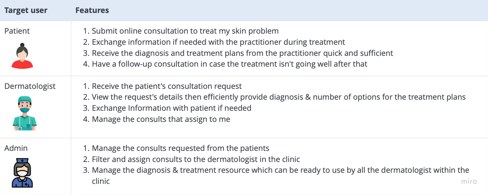
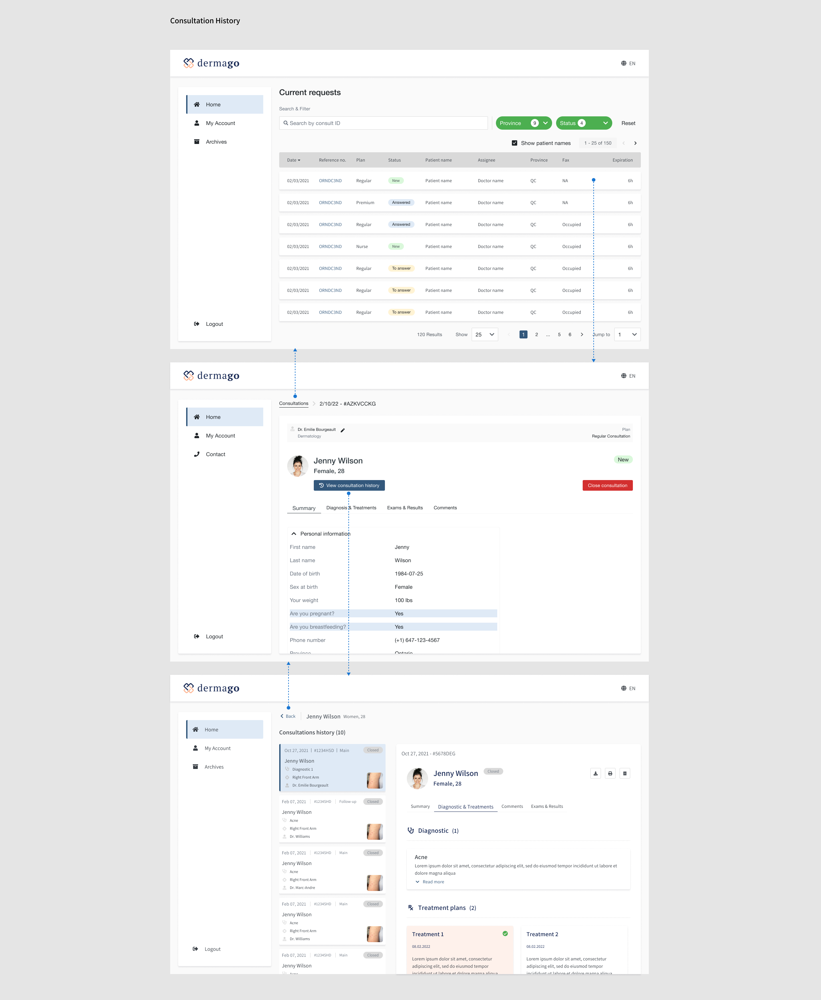

Dermago
Web Application
Team: ORO Health
My role: Product designer
Dermago offers an asynchronous consultation solution for healthcare professionals seeking to enhance patient access and care. It eliminates the need for scheduled appointments between patients and doctors. Instead, exchanges occur continuously and flexibly through instant messaging, accommodating the convenience of both parties. This approach significantly enhances time management for all involved.
Context
Dermago is the flagship product of ORO Health Inc., specializing in a Dermatology Platform facilitating seamless connections between dermatologists and patients for virtual/asynchronous consultations. Since 2020, Dermago has operated this online platform, primarily serving patients across Canada, with a focus on Quebec and Ontario.
The motivation behind the development of this product stems from the overwhelming volume of cases that doctors faced, particularly during the pandemic. This platform offers flexibility to both doctors and their patients through its asynchronous concept. This feature allows users to engage with the platform at their convenience, rather than being constrained by specific time slots.
The flow is very simple. The patient submits consultation via the platform, soon the doctor will receive the request and soon does the Diagnosis and Treatments based on the case details. Both of the parties will communicate directly and handly on the platform via the message feature. The patient then will receive their Diagnosis & Treatments from the doctor. The consultation is closed if everything is fine after all. If not, they will be able to make a Follow-up Consultation process.
Goal
Our high-level goals were to:
- Enhance accessibility and user-friendliness across diverse demographics and geographical locations.
- Empower patients with full control over their time and financial resources.
- Create a platform conducive to innovation and facilitate deeper engagement for healthcare pratitioners.
My responsibilities
I managed the entire design process of the product, working closely with a Product Owner and stakeholders to develop the majority of product features. Additionally, I partnered with a front-end dev, back-end devs, and Marketing Specialists throughout the product implementation phase.
...
Conceptual Development
Defined target users and the challenges unique to each group
The primary focus initially was to remember who the users are and where they were within the flow.
Based on the data collected over years of close collaboration with patients and healthcare practitioners in the clinics, we possessed the necessary insights to define the target user groups for the product. After conducting multiple sessions with stakeholders, including medical doctors, business development professionals, and marketing specialists, we identified threee distinct target user groups.
- Patient - Individuals experiencing skin problems who utilize the platform to submit consultations. This user group primarily comprises individuals aged between 30 and 50. They may seek consultations for themselves or act as representatives for someone under their care.
- Dermatologist - Medical professionals, including doctors or nurses, responsible for diagnosing and treating patients' skin conditions.
- The Admin - Medical professionals, either doctors or nurses, tasked with managing all aspects related to patients, doctors, and clinic operations.
Set the scope
Defining the scope provides a reference point for understanding what the product should accomplish for both users and the business. To achieve this, it's beneficial to list features and functions that represent the desired outcome. These features and functions are derived from the users' needs, aiding in clarifying the problems to be addressed before exploring potential solutions.
Significant Problems and Solutions
Patient
Submit/Re-submit a consultation request for myself or someone else
Context
Use Case #1 - I am a patient and also an account holder, they may need to submit consultations for myself.
Use Case #2 - I am an account holder, I want to submit consultations for my child or any individual in my care who may be underage or less proficient with technology and requires assistance, on behafl of them.
Use case #3 - I am an existing patient, having completed my initial consultation, return as existing patients, I wish to submit a new consultation request.
Question
"How can I design the process to enable patients to easily re-submit a new consultation for themselves or someone in their care without having to re-enter all their personal information?". Achieving this efficiently and confidently would greatly enhance user satisfaction.
Solution
- Auto saving the patient profile after consultation is submitted successfully.
The system will securely store all personal information provided by patients, creating profiles on the system, and will be automatically populated the saved data for future consultations. This feature speeds up the onboarding process for patients, enhancing efficiency significantly. - Manage patients' profiles inside Account Settings of the platform.
The patient who holds the account will be able to edit their family members' information at any time.
Patient - Onboarding for New Patient / Existing Patient and Patients' Profiles management
- Auto saving the patient profile after consultation is submitted successfully.
Submit a Follow-up Consultation
Context
After each consultation, patients have a seven-day window to contact the doctor regarding any treatment-related issues or changes in their condition. However, beyond this timeframe and after the consultation is closed, if the patient shows no improvement or experiences adverse reactions to the prescribed medication, they should contact the doctor for further guidance or treatment modification. This may necessitate a follow-up consultation.
For the same skin issue, patients expect to receive treatment from the same doctor who initially consulted with them. This ensures they do not have to repeatedly recount their medical history from the beginning multiple times.
Moreover, from a business perspective, offering the Follow-up feature along with a new line of suitable products at a reasonable cost would enhance the flexibility of the clinic's services.
Question
"How can we ensure that patients can easily distinguish between two distinct services: New consultation and Follow-up consultation, and then confidently submit a consultation as a Follow-up?"
Solution
- Add Follow-up Consultation as a separate service.
Introducing patients to a new service option, the Follow-Up Consultation, at the first step of onboarding enables them to quickly and confidently differentiate between two distinct services: New Consultation versus Follow-Up Consultation. - Allow patients to update their skin progress at the time.
The onboarding flow for the Follow-up consultation will automatically re-populate all essential information inherited from the previous consultation, for cases where patients are following up. However, to provide the doctor with an update on treatment progress since the last consult, the platform should prompt patients to input additional information and upload new photos of their skin condition. - Give patients a simple way to track the consultations they follow up.
In addition to displaying all consultations in the list, the design should illustrate the relationship between parent and child cases, particularly in terms of follow-up consultations.
To simplify the UX & UI and enhance comprehension, the platform should display only one consultation's details at a time. For Follow-up consultations, an additional section named "Skin Progression" should be included in the consultation details. This section contains links to the parent cases, each directing to their respective case details. This setup allows patients to conveniently navigate between past and current treatments as needed.
Patient - Follow-up Consultation
- Add Follow-up Consultation as a separate service.
Dermatologist
View the patient's consultation history
Context
When a patient submits multiple consultations via the platform, it's essential for the dermatologist to track all current and past consultations to ensure they can provide the best treatments during the consult.
Question
"In a platform that primarily manages data on consultations rather than patients, how does the doctor view the collection of a patient's consultations up to the present? so that the doctor can: 1) Obtain an overview of all the patient's skin diseases; 2) Review information on each consultation, including diagnosis, treatments, and prescribed medications recommended to the patient."
Solution
View the patient's consultation history inside the active consultation.

In a specific consultation, include a link or button labeled [View Consultation History]. Clicking this opens a new screen displaying other cases of the same patient, sorted by submission date.
Doctors can select each consultation from the list panel to view its details on the other side of the screen.
To avoid unnecessary interaction with the drilling down the "History Consults" again, a rule is applied. Following that, this feature is designed for reference purposes to assist doctors in accessing medical information. Therefore, it is intentionally designed to be read-only.Doctor - View Patient's Consultation History
Display Follow-Up Consultations in the list
Context
When the platform displays a list of consultations that includes both Main Consultations and Follow-Up Consultations, doctors need to differentiate between the types of each consultation. Simply adding a Consultation Type column to the list may not be the most effective solution, as it doesn't provide enough information. The platform should provide doctors with details such as: which cases are Follow-Up Consultations, how they relate to each other, and the correct order of these consultations in the list.
Question
"How might we design a structure for the consultation list that enables doctors to easily differentiate between Main and Follow-Up consultations, while also allowing them to access detailed information about Follow-Up consultations when needed?"
Solution
- Display Follow-Up consultations in the list alongside Main consultations.
Essentially, a Follow-Up consultation is a new consultation. Therefore, logically, this consultation type should be included in the current list of consultations. - Add Consultation Type column.
Add a "Consultation Type" column to the list to indicate whether consultations are Main or Follow-up. - List all Follow-Up cases directly linked to the current Follow-Up consultation.
Link the previous cases to the current Follow-Up consultation by providing a way to expand the rows to see additional attached cases. Doctors can then select an attached case to view its details. - Display Skin Progression.
Include a "Skin Progression" section containing all previous cases in link format within the current consultation details. This allows the doctor to reference those cases directly from the current consultation.
Doctor - Follow-Up Consultations
- Display Follow-Up consultations in the list alongside Main consultations.
Admin
Create Diagnosis & Treatment Templates
Context
Diagnosing and treating patients is a routine task for doctors and nurses. It's a common occurrence in this line of work to repeatedly provide the same Diagnosis & Treatment plans due to the recurrence of typical skin problems.
Question
"How might we offer doctors a quick way for Diagnosis & Treatment that saves time, accelerates the consulting process, and enhances productivity?"
Solution
- Allow practitioners to save Diagnosis & Treatment as a template for future use after completing the task.
After submitting the Diagnosis & Treatment plans for a specific case, practitioners are able to save those Diagnosis and/or Treatment plans to the system for future consultations. - Set up rules for creating and managing Diagnosis & Treatment templates within the clinic.
Once the "Save As Template" feature is enabled for all clinic users, there is a possibility of multiple practitioners saving identical templates. To prevent this, two rules will be implemented:
- Admins are tasked with creating "global templates," which can be shared and utilized by all practitioners within the clinic.
- Practitioners will have the flexibility to create and manage their own templates. However, the platform intentionally allows them to save their work as "local templates," which will be accessible and used exclusively by the creator only.
Testing
"To be continued..."